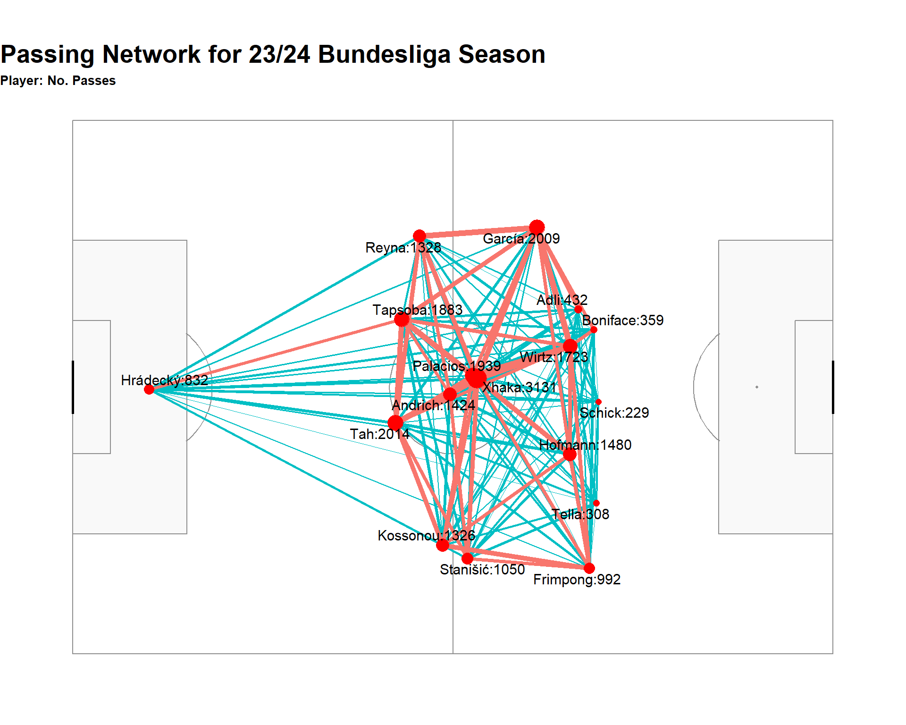
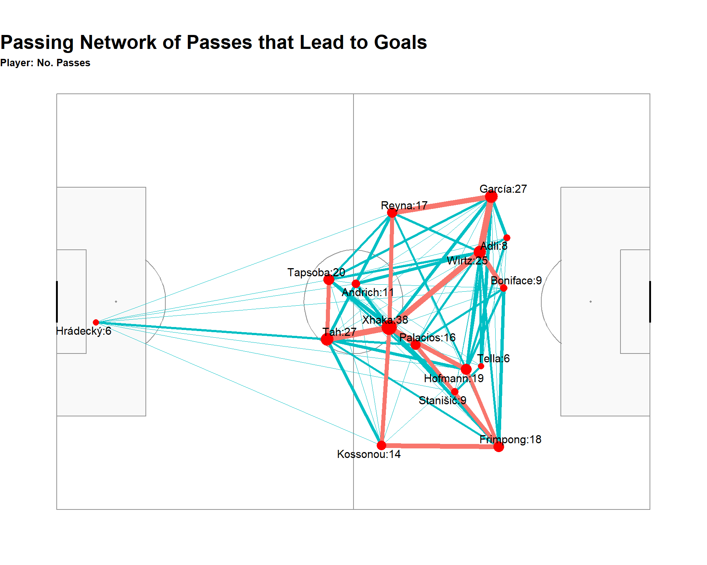

Introduction
The 2023/24 season of the Bundesliga will be remembered as one of the most extraordinary chapters in German football history. Bayer Leverkusen, a club often overshadowed by giants like Bayern Munich and Borussia Dortmund, etched their name in the annals of football with an unbeaten season. This remarkable achievement was a testament to the strategic acumen of their manager, the skill and determination of the players, and the unwavering support of their fans.
Bayer Leverkusen has become the talk of the town in the world of football, and the question on everyone’s minds now will be, “can they do it again?” My first question however, is why was no one able to beat them?
I am a strong believer of “Attack wins you games, defense wins you titles” So, my first approach to beating a team would be to figure out how do we keep them from scoring!
My Focus
My Focus in this blog is on the passing. If we are to keep it as simple as possible, we know that football is really about moving the ball and scoring a goal. If you can move the ball around well, you can score goals. On the other hand, if you know how a team moves the ball around, you can stop the team from scoring.
I have seen many analysts take an overall look at a teams passing and then develop passing networks based on heaps of passing data, most of which were sideways and backward passes. What I have decided to do is take a closer look, and zoom in on passing and passing sequences that lead to goals only.
My first order of action, given that I haven’t watched a Bayer Leverkusen match last season, was to visualise all their goals for the 23/24 Bundesliga season. In the interactive visual below we can select a match and view all the unbroken passing sequences that lead to Leverkusen goals (Note: Some matches have no visualisation as there were no goals scored by Leverkusen in those matches).
You might be confused by the grey dotted line on the plots that is labelled as “Avg Direction of Play” on the legend. This is simply a line of best fit that goes through all the player locations in the passing sequence.
When we look at some of these plots we can see a nice, abstracted view, of goals scored by Bayer Leverkusen, but, when the passing sequences become a bit more lengthy we may start to get lost in the dots and lines (see the goal scored at 46:16 in the RB Leipzig vs Bayer Leverkusen match).
To, somewhat, alleviate this problem, one can use passing networks. Passing networks are a great visualisation as they contain a large amount of information in one plot. Now, often I have seen passing networks based on passing data from a whole match, or even a whole season, but this often includes many sideways and backwards passes that we might not be that interested about. Below we see a plot of a passing network plot for Bayern Leverkusen that takes into account all of their passes for the season, compared to a passing network that is based only on passes that lead to goals.


One of the main aspects we look at when it comes to passing networks is the centrality index (C). There are many ways to calculate centrality. In this blog we have used the following calculation:
\(C=\frac{\sum_{i=1}^{N} (P_* \cdot P_i)}{(N-1) \sum_{i=1}^{N} p_i}\)
Centrality ranges from the values 0 to 1 and is a measure of how diverse or not diverse a team was with their passing. If we have a team with a centrality index of 100% (or 1) it means that there was only one person that everyone in that team passed to and that one person distributed the ball to everyone else. Whereas a centrality index values closer to 0 means that everyone in the team share the ball equally and there is not one person that stands out.
Bayer Leverkusen had a centrality index of 7% for both their passing network over the whole season and their passing network for goals only (although someone can check me on this). A centrality index of 7% means that goals came from all over the pitch and they were a difficult team to predict.
The data shows it. Bayer Leverkusen was scoring goals from everywhere, and it seems it was very difficult to tie them down. A striker, attacking mid, left back and right back make up the top four!
| Player | Goals | Assists |
|---|---|---|
| Victor Boniface | 14 | 8 |
| Florian Wirtz | 11 | 11 |
| Alex Grimaldo | 10 | 13 |
| Jeremie Frimpong | 9 | 7 |
| Patrik Schik | 7 | - |
| Jonas Hofmann | 5 | 7 |
| Nathan Tella | 5 | 2 |
| Amine Adli | 4 | 4 |
| Exequiel Palacios | 4 | 5 |
| Jonathan Tah | 4 | 1 |
As decentralised as Leverkusen might seem, I can’t help but notice the change of shape between the average position of players compared to their goal scoring position. Some players, like Xhaka, Boniface and Hoffmann don’t have a drastic change in average position. But if we are to look at Wirtz, Grimaldo and Reyna, we see that they seem to be drawn together during build ups to goal. Based on the goal scoring outcomes, we see that Leverkusen favoured their left-side to an extent. One idea to stopping Leverkusen might be to lock down the left side and be extra careful of the Reyna, Grimaldo and Wirtz triangle.
Another interesting point I notice is the link between Jonathan Tah and Granit Xhaka. There were 13 passes between them in Leverkusen’s build up. Compare this with the Writz - Grimaldo passing link that took place 12 times within goal sequences, or the Writz - Xhaka passing link that took place 10 times. Now, again, this is a great example of Leverkusen’s decentralised nature, but it does show us something interesting. Perhaps blocking some passes between Tah and Xhaka is more important than one might think.
In the modern game center backs have become less brute and more brains and the example of Jonathan Tah here is testimant to that. Going forward, if the center back is able to find the midfield pivot with a good pass, you can now successfully turn defense into attack. It is pointless if Xhaka finds himself with space in the middle of the field but neither of the center backs can find him.
Then adding on this finding, we see that Tapsoba doesn’t possess the same ability to find the midfielders as Tah does. Instead, Tapsoba often hands the ball over to Tah to get the ball moving forward it seems. My thinking here, if you want to quell the Leverkusen attack from the root, block passing lines between Tah and Xhaka and allow Tapsoba to have possession of the ball without presenting him with the Tah pass. This is likely going to make Leverkusen using a passing sequence that is not usually what they would use if they were building up to a goal.
Conclusion
These passing networks showed why Bayer Leverkusen was so difficult to stop. Their decentralised style of play and the talent they possessed in each area of the pitch was a formidable opponent to all. But we do still see some patterns: Some clear player shifts that lead to goals and defenders potentially forming the root of the goal scoring passing sequence. Food for thought for any defenders and managers rearing up to face the defending Bundesliga champions next season.